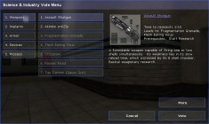
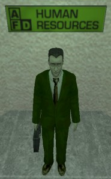
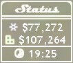
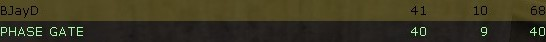

|
|
SCIENCE AND INDUSTRY MANUAL Translated by Cuerzo |


- Introducción
- Basics
- Advanced
- Interface
- Consejos para jugar mejor
An advanced guide is also available, which gives more details about the gameplay of Science & Industry:
Science and Industry es una modificación de Half-Life para juego en equipo que convierte a los jugadores en guardias de seguridad de una de las dos corporaciones competidoras, especializadas en investigación de alta tecnología. Cada una de las empresas comienza con tres científicos, que investigan mejor equipamiento para tu empresa, lo que significa más dinero para tu compañía. La efectividad de tus científicos depende del tiempo que trabajen, por tanto tu misión es, obviamente, protegerlos de los ataques enemigos, y atacar a tu enemigo para ralentizar su producción. Incluso mejor, puedes hacerte con más científicos, capturando los de tu enemigo y trayéndolos a tu laboratorio para establecer una ventaja definitiva sobre tu rival! Es tan fácil como pegarles en la cabeza con tu maletín... pero lo verdaderamente difícil es llegar a tu departamento de Recursos Humanos con tu nueva "adquisición"...
El truco esta en que cada corporación empieza con muy poca tecnología... así que tu equipo debe elegir que tecnologías deben investigar para obtener la mayor ventaja. Es posible que el armamento nuevo te de mejores opciones de combate, pero si no investigas armadura ni implantes te resultara muy difícil llevarte sus científicos. Algunas tecnologías incluso incrementan la producción, dándote ventaja monetaria. Todo esto puede ser tuyo... solicita tu trabajo como guardia de seguridad en Midland Carbide Labs [MCL] o en Amalgamated Fluorodynamics [AFD].
Lee las secciones siguientes para tener información más detallada.
 Para llegar a ser un miembro valioso de tu corporación, primero debes aprender a no perderte en tu base. Cada mapa es distinto, pero todos tienen más o menos los mismos elementos con los que te deberías familiarizar. Sigue los carteles que encuentres en tu base para encontrar los lugares cruciales. Y si te olvidas en que base estas, busca pistas en forma de color: La base de Midland Carbide Labs (MCL) es azul, y la de Amalmagated Fluorodynamics (AFD) es verde.
Para llegar a ser un miembro valioso de tu corporación, primero debes aprender a no perderte en tu base. Cada mapa es distinto, pero todos tienen más o menos los mismos elementos con los que te deberías familiarizar. Sigue los carteles que encuentres en tu base para encontrar los lugares cruciales. Y si te olvidas en que base estas, busca pistas en forma de color: La base de Midland Carbide Labs (MCL) es azul, y la de Amalmagated Fluorodynamics (AFD) es verde.
- Sala de clonación (Cloning Facilities) - Los jugadores muertos en servicio son clonados en esta sala. Aquí también puedes encontrar recargadores de salud y armadura. Cuando estés gravemente herido, vuelve aquí y refréscate un poco.
- Almacén de prototipos (Prototype Storage) - Las armas y aparatos que la corporación haya producido para ti son almacenados aquí. También podrás encontrar los prototipos experimentales mas recientes, así como contenedores con munición y otras armas. En la mayoría de las bases, esta sala y la de Clonación están unidas para facilitar a los empleados la puesta en marcha.
- Laboratorio (Research Lab) - Los laboratorios son el lugar donde tus científicos trabajan en extrañas y peregrinas materias. Protégelo a toda costa.
- Recursos Humanos (Human Resources) - Tu Administrador controla desde esta oficina las operaciones de tu empresa. Cuando encuentres algo que puede beneficiar a tu empresa (como científicos o armas robadas), tráelo aquí.
- Sala de ordenadores (Computer Labs) - Algunos mapas tienen cara maquinaria que contribuye a la investigación de tu empresa. Defiende este área de posibles saboteadores.
 Como guardia de seguridad, tu misión, por encima de todo, es mantener los laboratorios de la corporación seguros. Cuando todo vaya bien, veras a tus científicos moverse por el laboratorio, investigando materias que jamas llegaras a entender. Dependiendo del mapa, tu laboratorio será una gran habitación o varias habitaciones pequeñas. Tus científicos se moverán libremente por todo el área del laboratorio. Si los mantienes contentos y no les molestas en sus quehaceres manteniendo el nivel de ruido bajo, pronto veras como tu tecnología en armas, armadura y otras áreas aumenta vertiginosamente, así como el dinero de tu equipo.
Como guardia de seguridad, tu misión, por encima de todo, es mantener los laboratorios de la corporación seguros. Cuando todo vaya bien, veras a tus científicos moverse por el laboratorio, investigando materias que jamas llegaras a entender. Dependiendo del mapa, tu laboratorio será una gran habitación o varias habitaciones pequeñas. Tus científicos se moverán libremente por todo el área del laboratorio. Si los mantienes contentos y no les molestas en sus quehaceres manteniendo el nivel de ruido bajo, pronto veras como tu tecnología en armas, armadura y otras áreas aumenta vertiginosamente, así como el dinero de tu equipo.
Los científicos de tu corporación encontrarán imposible concentrarse si hay demasiado ruido en los laboratorios, por tanto, parte de tu trabajo consiste en mantener el silencio en los laboratorios de tu empresa. Mantener el silencio es tan fácil como evitar disparar armas en los laboratorios. Nada molesta tanto como el sonido de un subfusil disparándose o un cohete explotando en tus laboratorios, y esto es tan valido para tus armas como para las de tus rivales.
Si no consigues mantener el silencio, veras la eficiencia de tus científicos reducida. El nivel de eficiencia se puede ver en el icono con forma de átomo en la parte inferior derecha de tu pantalla. Si todo va bien, el átomo será blanco. Si tus científicos se ven molestados, parte del icono será blanco y la otra parte gris. Cuanto más grande sea la porción gris, peor será la efectividad de tus enemigos, y producirán menos dinero e investigación.
Tus científicos pueden ser matados por tus oponentes (sin embargo, no pueden ser matados por tu equipo: atacarles solo les molestara y bajara su eficiencia). Puedes pensar que matar científicos es una buena manera de incordiar a tu rival, porque gastara dinero en contratar nuevos científicos, y sus investigaciones se detendrán por un tiempo. Sin embargo, a tus científicos no les gustara saber que odias la ciencia hasta tal punto que colegas suyos han muerto por tu culpa, y su eficiencia bajara por cada uno que mates. Incluso peor, si matas a demasiados científicos, tus bioingenieros te implantaran un chip en la cabeza que reprimirá tus instintos homicidas, haciéndote daño cuando mates a científicos rivales. Peor aun, matar científicos hará que pierdas frags. En general, matar científicos no es una buena idea. Sin embargo, si no tienes ningún científico en tu equipo de investigación, la temporada de caza esta abierta.
Al principio de cada mapa, cada equipo comienza con un poco de dinero, tres científicos y dos armas: Maletín y Colt Defender. Tras unos segundos, cada equipo de científicos estará preparado para su primera investigación, y aparecerá un menú con varias opciones de investigación. Cada miembro del equipo tendrá unos segundos para votar, y la opción que consiga más votos al final del periodo estipulado será la próxima en ser investigada.
Arbol de tecnología de SI .96b

El árbol de tecnología es algo complejo, del mismo estilo que el que puedes ver en la serie de juegos "Civilization". Cada tecnología requiere unas investigaciones previas que necesitaras antes de pasar a algo más avanzado. Cada vez que tus científicos estén a punto de acabar una investigación aparecerá un menú con seis opciones tales como nuevas armas, mejor armadura, o incluso implantes biónicos que te harán más efectivo en combate. Si en algún momento hay más de seis opciones para investigar, solo aparecerán las seis más importantes. Recuerda que cada equipo empieza sin armadura, y que no obtendrás nada de los recargadores de pared hasta que no investigues una armadura básica.
La velocidad de investigación depende de varios factores como el número de científicos y su efectividad. Si un equipo recluta alguno de los científicos rivales obtendrá una gran ventaja tecnológica y es probable que llegue a estar varios niveles por delante de sus contrincantes.
Una buena manera de aumentar la productividad de tus laboratorios es "reclutar" científicos de una corporación enemiga. El método es el siguiente: Entrar en sus laboratorios (de manera más o menos discreta), sacar tu maletín y golpear a un científico en la cabeza. Por desgracia para ti, los científicos deducirán por tu uniforme que no trabajas ahí, y trataran de huir de ti. Aun así, están en muy baja forma, y si no hay guardias de seguridad enemigos cerca, no te costara gran trabajo capturarles.
 Una vez los hayas cazado, puedes colocarlos sobre tu hombro y llevarlos a tu departamento de Recursos Humanos. En el te estará esperando El Administrador (foto a la izquierda), para acogerlo y someterlo al rutinario lavado de cerebro e incorporarlo a tu empresa. Si tienes problemas hallando al administrador, sigue los carteles que indican por donde se va a "Recursos Humanos" (Human Resources).
Si caes muerto cuando llevabas un científico rival, quedara donde le dejaste, y volverá a los laboratorios enemigos por si solo al cabo de un tiempo, cuando recobre su conciencia. Hasta entonces, otro miembro de tu equipo puede ir,
recogerlo y acabar el trabajo que tu empezaste. Solo puedes recoger o robar científicos rivales, y los miembros del otro equipo lo único que pueden hacer es vigilarle hasta que vuelva a los laboratorios.
Si consiguieras matar a un oponente que maneja tecnología aun no conocida por tu compañía, puedes recoger ese arma o aparato y llevárselo a tu administrador para conseguir una bonificación en investigación. Cada objeto llevado con éxito disminuirá el tiempo necesario para investigarlo, y dicho efecto es acumulativo. Sin embargo, para poder acceder a esta tecnología, necesitas acabar la investigación votando la opción adecuada, con lo cual tus científicos empezaran a analizar el objeto, y acabaran mucho antes con el trabajo de investigación.
Si tu compañía va por delante en tecnología armamentística, o tienes un aparato que tu oponente no tiene, se cuidadoso. Si te matan cuando blandías ese arma, tu oponente seguramente hará todo lo posible por hacerse con ese arma y destrozar tu ventaja robando tu tecnología. Si estas malherido, evita usar armas muy avanzadas en combate.
 Muchas empresas de alta tecnología necesitan de caro armamento para ayudarles en sus investigaciones. Aunque este equipamiento puede ahorrarte mucho dinero y tiempo, es muy vulnerable a saboteadores. Cuando entres en el sector de investigación de tu oponente, ten un ojo en ordenadores, maquinas de clonación o cualquier otra cosa que pudiera desbaratar sus investigaciones.
Muchas empresas de alta tecnología necesitan de caro armamento para ayudarles en sus investigaciones. Aunque este equipamiento puede ahorrarte mucho dinero y tiempo, es muy vulnerable a saboteadores. Cuando entres en el sector de investigación de tu oponente, ten un ojo en ordenadores, maquinas de clonación o cualquier otra cosa que pudiera desbaratar sus investigaciones.
Si quieres saber que es importante y que no, míralo en la descripción de cada mapa. La podrás leer cuando elijas a tu equipo al comienzo del juego. Lee cuales son los objetivos críticos, encuéntralos y destrúyelos.
La mejor manera de destruir equipamiento es con un arma de contacto (tu maletín) o con explosivos. Cuando la maquina haya sido destruida, su dueño empezara a gastar dinero y tiempo en repararla, y tras un periodo de tiempo será reemplazada.
Algunos mapas contienen recursos especiales que darán a tu compañía un empujón en la competición. Lee la descripción de cada mapa para saber que recursos existen en ese mapa.
Cada recurso es distinto, y lo encontraras descrito en detalle en la descripción. En general, siguen un patrón donde los recoges de un lugar (la base enemiga o un lugar neutral) y se los llevas a tu Administrador. Es muy parecido a llevar un científico, pero hay un par de diferencias: Si mueres intentando llevar un recurso a tu Administrador, ese recurso estará perdido para siempre. Así mismo, algunos recursos tienen otras propiedades, como la obligación de llevarlos en un tiempo limitado. Nunca olvides leer la descripción del mapa.
En el caso de que murieras en servicio, tu corporación te devolverá generosamente a la vida mediante tecnología de clonación. Esta resurrección cuesta dinero, y si tu equipo se pasa todo el día muriendo seguramente no les quedara demasiado dinero. Hay un pequeño retraso mientras la clonación es completada, y ese tiempo se puede reducir mediante investigaciones especiales. Tras tu clonación, serás invulnerable durante unos cuantos segundos, tiempo suficiente para encargarte de esos rivales que campean fuera de la sala de clonación.
Science and Industry usa dos tipos de puntuación para evaluar a sus jugadores. La puntuación del equipo va dada por la cantidad de dinero en sus cajas fuertes, y la puntuación individual, por el número de frags obtenidos. Existen bonificaciones y penalizaciones para ambas puntuaciones. La puntuación de equipo siempre aparece en la esquina superior derecha.
| Fondos Corporativos | |
| Ganancias básicas por segundo: | $60 |
| Extra producido por científico y segundo (máxima eficiencia): | $15 |
| Servicios de clonación: | -$800 |
| Contratar un científico : | -$1,000 |
| Puntuación Personal | |
| Matar a un rival | 1 |
| Matar al Empleado del Mes rival | 2 |
| Matar a un rival cerca del laboratorio (molestando científicos) | 2 |
| Matar a un rival cerca del laboratorio (sin molestar científicos) | 3 |
| Defender a un compañero que transporta un científico) | 2 |
| Matar a un rival que intenta "reclutar" uno de tus científicos | 2 |
| Reclutar a un científico | 5 |
| Capturar armas enemigas para posterior investigación | 2 |
| Destruir tecnología enemiga (ordenadores y demás) | varía |
| Capturar recursos | varía |
HUD significa "Head Up Display" (en roman paladino "Pantalla de estatus"). Es tu principal fuente de información sobre lo que ocurre en el juego.

Esta es una explicación de lo que se ve en ella:
Personal
 La parte inferior izquierda de la pantalla contiene tu información personal. Incluye tu salud, armadura y munición disponible. La salud y la armadura pueden ser recuperadas a través de los recargadores de pared que hay en tu base, o a través algunas tecnologías como Biotecnología Regenerativa o Armadura Regenerativa. Tu munición se recarga en las cajas de munición disponibles en tu Almacén de Prototipos o a través de tecnologías como Replicadores Personales de Munición. Ten en cuenta que tu compañía empieza sin armadura y que esta debe ser investigada. Hasta entonces, los recargadores de pared estarán inactivos.
La parte inferior izquierda de la pantalla contiene tu información personal. Incluye tu salud, armadura y munición disponible. La salud y la armadura pueden ser recuperadas a través de los recargadores de pared que hay en tu base, o a través algunas tecnologías como Biotecnología Regenerativa o Armadura Regenerativa. Tu munición se recarga en las cajas de munición disponibles en tu Almacén de Prototipos o a través de tecnologías como Replicadores Personales de Munición. Ten en cuenta que tu compañía empieza sin armadura y que esta debe ser investigada. Hasta entonces, los recargadores de pared estarán inactivos.
Investigación
 La parte inferior derecha de la pantalla contiene información sobre tu compañía. El átomo es el indicador de eficiencia: cuanto más "lleno" esté más eficientes son tus científicos. Si el átomo esta blanco, tus científicos trabajan al 100%. Si esta gris, tu equipo no esta trabajando en absoluto. Si brilla con un verde radioactivo tu equipo esta trabajando por encima de su capacidad habitual (se puede lograr con el uso del Rayo Mental). En el ejemplo mostrado, el equipo científico esta trabajando al 100% más o menos. Puedes ver la efectividad individual de cada científico centrándole en tu punto de mira.
La parte inferior derecha de la pantalla contiene información sobre tu compañía. El átomo es el indicador de eficiencia: cuanto más "lleno" esté más eficientes son tus científicos. Si el átomo esta blanco, tus científicos trabajan al 100%. Si esta gris, tu equipo no esta trabajando en absoluto. Si brilla con un verde radioactivo tu equipo esta trabajando por encima de su capacidad habitual (se puede lograr con el uso del Rayo Mental). En el ejemplo mostrado, el equipo científico esta trabajando al 100% más o menos. Puedes ver la efectividad individual de cada científico centrándole en tu punto de mira.
El número al lado del átomo es el numero de científicos que trabajan para tu empresa. Si ves que este número desciende de repente, pueden pasar dos cosas: uno de tus científicos ha caído muerto, por lo que deberías correr a tu laboratorio y encargarte del agresor; o bien uno de tus científicos esta siendo robado, en cuyo caso deberías interceptarle antes de que llegue a su Administrador.
Bajo el átomo esta la información sobre tu siguiente objetivo de investigación: El icono de lo que investigas y una barra de progreso que se ira llenando a medida que la investigación avance.
Indicador de fondos

En la parte superior derecha (o en la inferior izquierda, dependiendo del valor de la variable hud_showTeamCash) puedes ver el dinero del que disponen ambas corporaciones. Es un dato importante que puedes consultar sin necesidad de ver las tablas de puntuación. Bajo las dos puntuaciones hay un reloj de cuenta atrás. Cuando llegue a cero, el partido habrá acabado y el ganador será declarado.
Indicadores de transporte
 Si estas llevando un científico en tu espalda, lo veras indicado con un icono sobre la información de Investigación. Encima del icono veras el nombre del científico que estas transportando.
Si estas llevando un científico en tu espalda, lo veras indicado con un icono sobre la información de Investigación. Encima del icono veras el nombre del científico que estas transportando.
 Los recursos se denotan de manera similar a los científicos, solo que hay un icono para cada tipo de recurso, y sobre el veras el nombre del recurso que transportas.
Los recursos se denotan de manera similar a los científicos, solo que hay un icono para cada tipo de recurso, y sobre el veras el nombre del recurso que transportas.
Tener un ojo en la tabla de puntuación de Science and Industry es esencial para coordinarte con tus compañeros de equipo.

Hay varios grupos aquí. Los dos primeros son las dos corporaciones: Midland Carbide Labs (MCL) y Amalmagated Fluorodynamics (AFD). Al lado del nombre de cada compañía esta la cantidad de dinero que esa compañía ha ganado hasta ahora. Mira esta cantidad fijamente, ya que la compañía ganadora es la que consigue amasar mayor cantidad de dinero al final de un encuentro. El tercer grupo esta formado por los Desempleados (Unemployed), que todavía no se han decantado por una de las dos compañías para jugar con ella, o están simplemente mirando el partido en modo Observador.
Empleado del mes
Aquellos jugadores que tienen "E" al lado de su nombre son los Empleados del Mes de sus respectivas compañías. Han probado ser experimentados y hábiles jugadores. Escúchales, ya que son muy buenos dirigiendo maniobras ofensivas y defensivas. Un buen empleado del mes suele llevar a su equipo por la ruta correcta de investigación y tener un plan para la protección (o recuperación) de científicos.
Llamas
Si un jugador es calificado como "L", ten cuidado. En España, la traducción correcta de "Llama" sería capullo, lamer, imbécil o algo parecido. Para llegar a ser calificado como Llama, un jugador ha de comportarse estúpidamente, molestar a su equipo continuamente o algo similar. A nadie le gusta un Llama. Sin embargo, si ves que el jugador se reforma y empieza a comportarse bien, se agradable: se acaba de dar cuenta de sus errores.

Los empleados que estén transportando un científico son mostrados sobre fondo blanco en la tabla. Encuéntrales y ayúdales en el transporte. Ten en cuenta que tampoco son capaces de comunicarse bien, ya que tienen las manos ocupadas en cosas más importantes.
Colectores de Recursos
Si uno de tus compañeros esta transportando un recurso, será mostrado sobre fondo marrón. Lo que está transportando depende del mapa, pero por lo general, siempre agradecerán tu colaboración en el transporte.
Ahora que estas familiarizado con los básicos de Science and Industry, aqui van algunas pistas generales:
- Uno de los puntos más importantes de S&I es que los laboratorios requieren una fuerte defensa. Recuerda que es mas fácil proteger a tus científicos que robar otros nuevos. Además, los defensores consiguen grandes bonificaciones de puntuación por las muertes defensivas, y están más cerca de los centros de clonación para volver a por más munición o a curar sus heridas. El buen trabajo en equipo es esencial y permite tanto una mejor defensa como un ataque en masa más eficaz.
- Cuando seas clonado, no gastes tu tiempo en recargar tus armas hasta la máxima capacidad... de todos modos rara vez llegaras a gastar tu munición. Cada segundo que estés recargando armas, tu defensa estará debilitada.
- Vota por las tecnologías sabiamente. De acuerdo en que las nuevas armas son divertidas, pero nunca tendrás una ventaja clara si no investigas mejores armaduras o implantes bionicos. Casi todas las tecnologías importantes precisan de Procesos de Fabricación, con lo que es importante investigarlos. Algunas tecnologías dan importantes ventajas, como la mayor eficiencia que se consigue con Café Extrafuerte o el hecho de que Biotecnología Regenerativa lleve a todos los bioimplantes. Escucha a los jugadores experimentados, ellos están mejor informados sobre qué es bueno para tu equipo. Si quieres ser un experto en investigación, no olvides mirar el Arbol de Tecnología.
- No seas llama. Se agradable, juega limpio, mantén los equipos equilibrados, recuerda que TU también fuiste novato, y sobre todo DIVIÉRTETE!!!